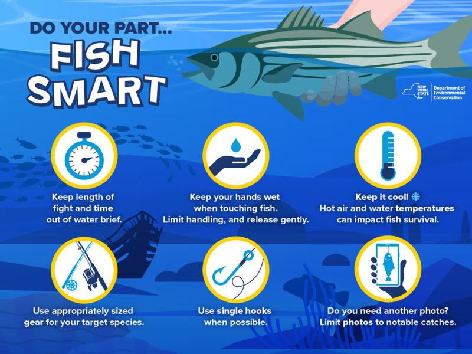

We are the Products
Do you enjoy fishing? Do you ever worry about accidentally breaking a rule? Catching the wrong fish? The rules of fishing
can often be complicated, necessitating entire booklets of rules and regulations and strict boundaries.

We regulate fishing, because without regulations the fish population would be destroyed and ecosystems demolished.
When trying to hook a fish, the everyday working class man most often follows the rules. When trying to hook you on content, big media companies also follow the rules -- only because there aren't any.
Addictive Algorithms.
Adds based on your personal data.
Adds based on the people you hang out with.
Manufactured social pressure to not miss out.
Inability to bring your content to other platforms.
Disincentivizing content that has you leave the platform.
These are all tools that are used to not earn, but steal you attention.
The unfortunate thing is Meta, Google, Disney, the News, are all much better at stealing your attention than you will ever be at fishing.